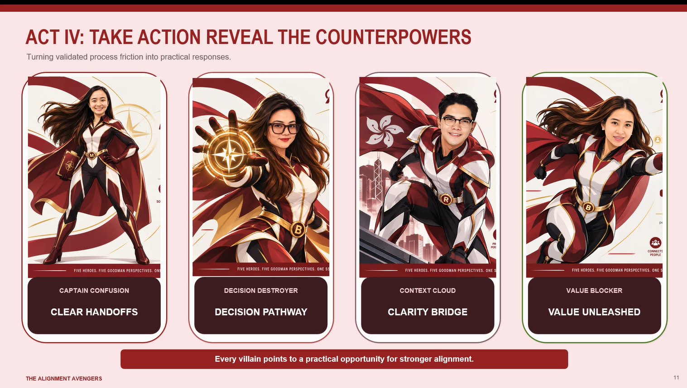
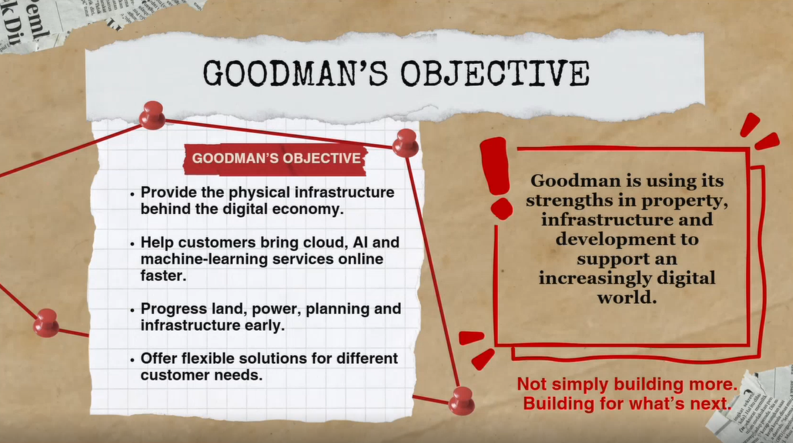

SUCCESSFUL PRACTICE
Improving Team Coordination
Example of how a regional team improved communication and task coordination through a shared tracking process.
Discover useful insights, share regional experiences, access practical resources, and learn from the knowledge of other teams.
Explore Knowledge →Turning individual experiences into shared knowledge that benefits everyone.
Knowledge Sharing provides a centralized space where teams can exchange information, highlight successful practices, document valuable experiences, and access resources that can be applied across different regions and departments.
Explore information and resources that support continuous learning and collaboration.
Stay informed about recent developments, relevant updates, industry insights, and useful information that can benefit the team.
Explore News →Discover successful approaches, local experiences, and effective practices implemented by different regional teams.
View Practices →Access practical templates, step-by-step guides, documentation, and lessons from previous projects and activities.
Browse Resources →Find valuable information that other teams can easily access, adapt, and apply to their own operations.
Discover Knowledge →Learn from successful initiatives and experiences across different teams and regions.
Example of how a regional team improved communication and task coordination through a shared tracking process.
An example of improving routine workflows through better documentation and standardized procedures.
Useful insights and lessons learned from completed activities that can guide future projects.
Browse useful news, templates, guides, and documented experiences.
A collection of relevant updates, new developments, and useful information for organizational awareness.
Learn about effective approaches and initiatives implemented by regional teams.
Access reusable documents, forms, checklists, and guides for daily activities.
Document experiences, challenges, solutions, and recommendations from completed projects.
A reference for documenting processes and making information easier to follow.
Discover resources and solutions that can be adapted by other departments.
No resources found. Try another keyword or category.
Explore sample presentations from different squads. These previews demonstrate how knowledge and experiences can be shared across teams.
Sample slides showcasing knowledge and experiences shared by the team.

Sample slides showcasing knowledge and experiences shared by the team.

Sample slides showcasing knowledge and experiences shared by the team.
ℹ️ These images are sample previews for demonstration purposes only. They do not represent the complete presentation files.
Sample image for demonstration purposes only.